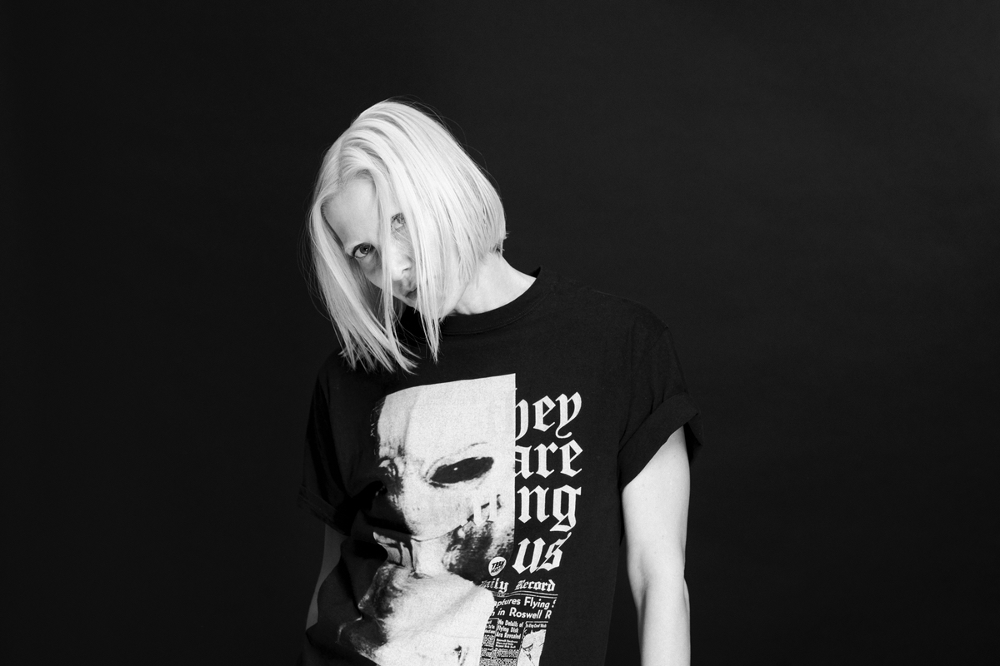

Ellen Allien — электронная музыкантка, продюсерка и основательница лейбла BPitch Control. Проживает в Берлине, но любит путешествовать. Поёт на немецком и на английском языках. Её музыку сложно классифицировать, но больше всего она похожа на танцевально ориентированное техно и электро, с вкраплениями необычных звуковых решений. Недавно Эллен запустила свою линию одежды. Детство Эллен прошло в Берлине, разделенном стеной, и это оставило неизгладимый след на всей её последующей жизни. Её творчество пропитано безграничной любовью к родному городу. А первый альбом, вышедший в свет в 2001 году, носит название Stadtkind, что буквально можно перевести «дитя города». Следующий альбом, наполненный урбанистической романтикой, Berlinette, был выпущен 2003 году и записан уже совместно с Apparat, известным также под именем Саша Ринг. А самый последний проект — The Other Side (совместно с журналом TimeOut) — представляет собой туристический видео-гид по излюбленным Аллиен местам Берлина, музыкальная часть не ограничена только электроникой и содержит специально отобранные треки от лучших и самых ярких немецких артистов.
Nina Kraviz (Нина Кравиц) — российская диджейка, музыкальная продюсерка и певица. Родилась и выросла в Иркутске. Получила стоматологическое образование. Некоторое время работала по специальности, была ведущей шоу на иркутском радио, писала фэнзин. В начале 2000-х годов переехала в Москву. Как диджей выступает с 2003 года. В 2005 году она была принята в Red Bull Music Academy в Сиэтле, однако не смогла приехать из-за проблем с визой. Тем не менее она смогла побывать в академии в Мельбурне в 2006 году. В 2008 году она стала резидентом клуба «Пропаганда» в Москве. Нина Кравиц выпустила свой дебютный альбом Nina Kraviz в феврале 2012 года через лейбл Rekids, он получил смешанно-положительные отзывы. Её видео Between The Beats: Nina Kraviz было выпущено в марте 2013 года. Благодаря этому видео Нина Кравиц обратила на себя внимание, оно дало начало дискуссии о феминизме и сексуальности в электронной музыке. Кравиц основала свой собственный лейбл под названием «трип» в 2014 году. Под этим лейблом она издаёт молодых российских музыкантов. В 2017 году запустила подлейбл «трипа» GALAXIID. Приняла участие в написании музыки для игры Cyberpunk 2077, так же озвучила в самой игре своё камео, в русской и английской версиях.